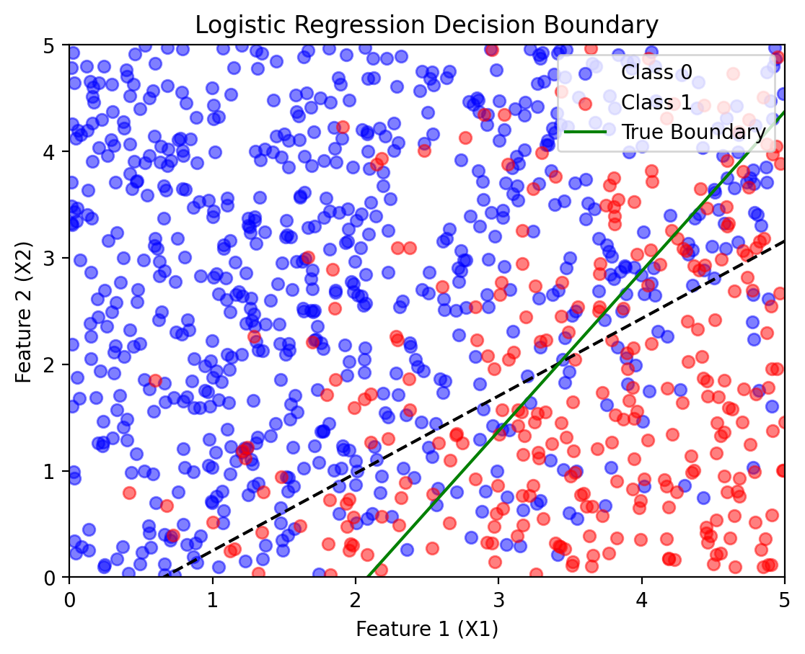

import matplotlib.pyplot as plt
import numpy as np
import torch
import torch.nn as nn
import pandas as pd
# Retina mode
%matplotlib inline
%config InlineBackend.figure_format = 'retina'PMF and their applications
ML
—author: Nipun Batrabadges: truecategories:- MLdate: ’2025-02-11’title: PMF and their applications toc: true—
Probability Mass Functions (PMF) and Their Applications## IntroductionProbability Mass Functions (PMF) are fundamental tools for describing the behavior of discrete random variables. A PMF tells us the probability that a discrete random variable takes each of its possible values. This concept is essential for understanding many real-world phenomena, from coin flips and dice rolls to classification problems in machine learning.In this notebook, we’ll explore PMFs through both theoretical foundations and practical applications, including their connection to logistic regression - one of the most important classification algorithms in machine learning. We’ll see how the Bernoulli distribution (a special PMF) naturally leads to logistic regression for binary classification problems.## Learning ObjectivesBy the end of this notebook, you will be able to:1. Define and interpret Probability Mass Functions (PMF)2. Distinguish between PMF, PDF, and CDF3. Work with common discrete distributions (Bernoulli, Binomial, Categorical)4. Apply PMFs to real-world modeling scenarios5. Connect PMFs to logistic regression for classification6. Implement and visualize PMF-based models using Python7. Understand the generative vs. discriminative modeling paradigm## Theoretical Background### Definition of Probability Mass FunctionFor a discrete random variable \(X\) that can take values \(x_1, x_2, \ldots, x_k\), the Probability Mass Function (PMF) is:\[P(X = x_i) = p_i\]where \(p_i \geq 0\) for all \(i\), and \(\sum_{i=1}^k p_i = 1\).### Key Properties of PMF:1. Non-negativity: \(P(X = x) \geq 0\) for all $x$2. Normalization: $_{ x} P(X = x) = 1$3. Additivity: \(P(X \in A) = \sum_{x \in A} P(X = x)\) for any set \(A\)### Common Discrete Distributions:#### 1. Bernoulli DistributionFor binary outcomes (success/failure):\[P(X = 1) = p, \quad P(X = 0) = 1-p\]#### 2. Binomial Distribution For \(n\) independent Bernoulli trials:\[P(X = k) = \binom{n}{k} p^k (1-p)^{n-k}\]#### 3. Categorical DistributionFor \(k\) mutually exclusive outcomes:\[P(X = i) = p_i, \quad \sum_{i=1}^k p_i = 1\]### Connection to Machine LearningPMFs are fundamental to many machine learning algorithms:- Classification: Predicting discrete class labels- Generative Models: Modeling the joint distribution \(P(X, Y)\)- Discriminative Models: Modeling the conditional distribution \(P(Y|X)\)—## Practical Implementation
Example 1: Understanding Basic PMFsLet’s start with simple examples to build intuition about PMFs.
# Example 1: Basic PMF Examples# 1. Fair Die PMFdie_outcomes = np.arange(1, 7) # {1, 2, 3, 4, 5, 6}die_pmf = np.ones(6) / 6 # Each outcome has probability 1/6# 2. Loaded Die PMF loaded_die_pmf = np.array([0.1, 0.1, 0.1, 0.1, 0.2, 0.4]) # Favors 5 and 6# 3. Bernoulli PMF (Coin flip)coin_outcomes = np.array([0, 1]) # {Tails, Heads}coin_pmf = np.array([0.3, 0.7]) # Biased toward heads# Visualizationfig, axes = plt.subplots(1, 3, figsize=(15, 5))# Fair dieaxes[0].bar(die_outcomes, die_pmf, alpha=0.7, color='blue')axes[0].set_title('Fair Die PMF')axes[0].set_xlabel('Outcome')axes[0].set_ylabel('Probability')axes[0].set_ylim(0, 0.5)axes[0].grid(True, alpha=0.3)# Add probability values on barsfor i, p in enumerate(die_pmf): axes[0].text(i+1, p+0.01, f'{p:.3f}', ha='center', va='bottom')# Loaded dieaxes[1].bar(die_outcomes, loaded_die_pmf, alpha=0.7, color='red')axes[1].set_title('Loaded Die PMF')axes[1].set_xlabel('Outcome')axes[1].set_ylabel('Probability')axes[1].set_ylim(0, 0.5)axes[1].grid(True, alpha=0.3)for i, p in enumerate(loaded_die_pmf): axes[1].text(i+1, p+0.01, f'{p:.3f}', ha='center', va='bottom')# Biased coinaxes[2].bar(coin_outcomes, coin_pmf, alpha=0.7, color='green')axes[2].set_title('Biased Coin PMF')axes[2].set_xlabel('Outcome (0=Tails, 1=Heads)')axes[2].set_ylabel('Probability')axes[2].set_ylim(0, 0.8)axes[2].grid(True, alpha=0.3)for i, p in enumerate(coin_pmf): axes[2].text(i, p+0.02, f'{p:.3f}', ha='center', va='bottom')plt.tight_layout()plt.show()# Verify PMF propertiesprint("VERIFICATION OF PMF PROPERTIES:")print("="*40)print(f"Fair die:")print(f" - All probabilities ≥ 0: {all(die_pmf >= 0)}")print(f" - Sum = 1: {np.sum(die_pmf):.6f}")print(f"\nLoaded die:")print(f" - All probabilities ≥ 0: {all(loaded_die_pmf >= 0)}")print(f" - Sum = 1: {np.sum(loaded_die_pmf):.6f}")print(f"\nBiased coin:")print(f" - All probabilities ≥ 0: {all(coin_pmf >= 0)}")print(f" - Sum = 1: {np.sum(coin_pmf):.6f}")print(f"\nExpected Values:")print(f" - Fair die: {np.sum(die_outcomes * die_pmf):.3f}")print(f" - Loaded die: {np.sum(die_outcomes * loaded_die_pmf):.3f}")print(f" - Biased coin: {np.sum(coin_outcomes * coin_pmf):.3f}")Example 2: Bernoulli Distribution and Binary ClassificationThe Bernoulli distribution is fundamental to binary classification. Let’s explore how it connects to logistic regression.
Generating Synthetic Binary Classification DataWe’ll create a dataset where the class labels follow a Bernoulli distribution whose parameter depends on the input features.
Understanding the Data Generation Process:1. Linear Combination: \(z = w_1 x_1 + w_2 x_2 + b\) (logits)2. Sigmoid Transformation: \(p = \sigma(z) = \frac{1}{1 + e^{-z}}\) 3. Bernoulli Sampling: \(Y \sim \text{Bernoulli}(p)\)This creates a natural connection between continuous features and binary outcomes through the Bernoulli PMF.
# Visualize how the Bernoulli PMF varies across feature spacefig, axes = plt.subplots(2, 3, figsize=(18, 12))# 1. Probability surfacex1_range = np.linspace(0, 5, 50)x2_range = np.linspace(0, 5, 50)X1_grid, X2_grid = np.meshgrid(x1_range, x2_range)# Compute probability for each pointlogits_grid = w1 * X1_grid + w2 * X2_grid + bprob_grid = torch.sigmoid(torch.tensor(logits_grid)).numpy()contour = axes[0, 0].contourf(X1_grid, X2_grid, prob_grid, levels=20, cmap='RdYlBu_r')axes[0, 0].set_title('Bernoulli Parameter p(x₁, x₂)\nProbability of Class 1')axes[0, 0].set_xlabel('Feature 1 (X₁)')axes[0, 0].set_ylabel('Feature 2 (X₂)')plt.colorbar(contour, ax=axes[0, 0])# Add decision boundary (p = 0.5)contour_line = axes[0, 0].contour(X1_grid, X2_grid, prob_grid, levels=[0.5], colors='black', linewidths=2)axes[0, 0].clabel(contour_line, inline=True, fontsize=10)# 2. Data points with probability coloringX1_np, X2_np, Y_np = X1.numpy(), X2.numpy(), Y.numpy()scatter = axes[0, 1].scatter(X1_np, X2_np, c=prob_Y.numpy(), cmap='RdYlBu_r', alpha=0.7, s=30, edgecolors='black', linewidth=0.5)axes[0, 1].set_title('Data Points Colored by\nBernoulli Parameter p')axes[0, 1].set_xlabel('Feature 1 (X₁)')axes[0, 1].set_ylabel('Feature 2 (X₂)')plt.colorbar(scatter, ax=axes[0, 1])# 3. Actual class labelsaxes[0, 2].scatter(X1_np[Y_np == 0], X2_np[Y_np == 0], color="blue", label="Class 0", alpha=0.7, s=30)axes[0, 2].scatter(X1_np[Y_np == 1], X2_np[Y_np == 1], color="red", label="Class 1", alpha=0.7, s=30)axes[0, 2].set_title('Actual Class Labels\n(Bernoulli Realizations)')axes[0, 2].set_xlabel('Feature 1 (X₁)')axes[0, 2].set_ylabel('Feature 2 (X₂)')axes[0, 2].legend()# 4. PMF visualization for specific pointssample_points = [(1, 1), (2.5, 2.5), (4, 1)]colors = ['blue', 'purple', 'red']for i, (x1_val, x2_val) in enumerate(sample_points): # Calculate probability for this point logit_val = w1 * x1_val + w2 * x2_val + b p_val = torch.sigmoid(torch.tensor(logit_val)).item() # Plot the Bernoulli PMF for this point outcomes = [0, 1] probabilities = [1 - p_val, p_val] ax = axes[1, i] bars = ax.bar(outcomes, probabilities, alpha=0.7, color=colors[i]) ax.set_title(f'Bernoulli PMF at ({x1_val}, {x2_val})\np = {p_val:.3f}') ax.set_xlabel('Class') ax.set_ylabel('Probability') ax.set_ylim(0, 1) ax.grid(True, alpha=0.3) # Add probability values on bars for j, prob in enumerate(probabilities): ax.text(j, prob + 0.02, f'{prob:.3f}', ha='center', va='bottom', fontweight='bold') # Mark this point on the main plot axes[0, 1].plot(x1_val, x2_val, 'o', color=colors[i], markersize=10, markeredgecolor='black', markeredgewidth=2) axes[0, 1].text(x1_val + 0.1, x2_val + 0.1, f'Point {i+1}', color=colors[i], fontweight='bold')plt.tight_layout()plt.show()print("PMF ANALYSIS FOR DIFFERENT POINTS:")print("="*50)for i, (x1_val, x2_val) in enumerate(sample_points): logit_val = w1 * x1_val + w2 * x2_val + b p_val = torch.sigmoid(torch.tensor(logit_val)).item() print(f"\nPoint {i+1}: ({x1_val}, {x2_val})") print(f" Logit z = {w1:.1f}×{x1_val} + {w2:.1f}×{x2_val} + {b:.1f} = {logit_val:.3f}") print(f" Probability p = σ({logit_val:.3f}) = {p_val:.3f}") print(f" Bernoulli PMF: P(Y=0) = {1-p_val:.3f}, P(Y=1) = {p_val:.3f}") print(f" Most likely class: {1 if p_val > 0.5 else 0}")print(f"\nDecision boundary equation: {w1:.1f}×X₁ + {w2:.1f}×X₂ + {b:.1f} = 0")print(f"Simplified: X₂ = {-w1/w2:.3f}×X₁ + {-b/w2:.3f}")Visualizing the Bernoulli PMF in ActionLet’s examine how the Bernoulli PMF varies across our feature space:
# Set random seed
torch.manual_seed(42)<torch._C.Generator at 0x11e27cab0>Understanding the Learning Process: Maximum Likelihood EstimationLogistic regression learns by finding parameters that maximize the likelihood of observing our data. This is directly connected to the Bernoulli PMF!
—## Summary and Key Takeaways### What We’ve Learned About PMFs:1. Definition and Properties: PMFs describe discrete random variables with non-negative probabilities that sum to 12. Connection to Machine Learning: - Bernoulli Distribution → Binary Classification → Logistic Regression - Categorical Distribution → Multi-class Classification → Softmax Regression3. Maximum Likelihood Estimation: Learning algorithms find parameters that maximize the likelihood of observed data under the assumed PMF4. Practical Applications: PMFs model discrete outcomes in classification, counting processes, and decision-making scenarios### Mathematical Connections:Binary Classification (Bernoulli PMF):- \(P(Y = 1|X) = \sigma(w^T X + b)\) where \(\sigma(z) = \frac{1}{1+e^{-z}}\)- Loss function: \(-\sum_i [y_i \log p_i + (1-y_i) \log(1-p_i)]\)Multi-class Classification (Categorical PMF):- \(P(Y = k|X) = \frac{e^{w_k^T X + b_k}}{\sum_{j=1}^K e^{w_j^T X + b_j}}\) (softmax)- Loss function: \(-\sum_i \sum_k y_{ik} \log p_{ik}\) (cross-entropy)### Key Insights for Data Science:1. Probabilistic Foundation: Classification is fundamentally about modeling conditional PMFs2. Generative vs. Discriminative: PMFs can model \(P(X,Y)\) (generative) or \(P(Y|X)\) (discriminative)3. Uncertainty Quantification: PMFs naturally provide prediction confidence through probabilities4. Model Selection: Different PMF assumptions lead to different algorithms (Naive Bayes vs. Logistic Regression)### Real-World Applications:- Medical Diagnosis: Modeling disease presence/absence (Bernoulli)- Customer Behavior: Predicting purchase categories (Categorical) - Quality Control: Counting defects (Poisson/Binomial)- Natural Language: Word occurrence in documents (Multinomial)- Recommendation Systems: Item preferences (Categorical/Multinomial)### Connection to Broader Topics:- Exponential Family: Bernoulli and Categorical are exponential family distributions- Information Theory: Cross-entropy loss connects to information theory- Bayesian Statistics: PMFs serve as likelihood functions in Bayesian inference- Causal Inference: Understanding \(P(Y|do(X))\) vs. \(P(Y|X)\)Understanding PMFs provides the probabilistic foundation for classification algorithms, uncertainty quantification, and decision-making under uncertainty. This knowledge bridges pure probability theory with practical machine learning applications.
# Example: Categorical Distribution (Multinomial Classification)# Simulate a 3-class classification problemtorch.manual_seed(123)n_samples = 500n_classes = 3# Generate 2D featuresX_multi = torch.distributions.Uniform(0, 6).sample((n_samples, 2))# Define parameters for 3-class softmax# Each class has its own linear functionW = torch.tensor([[1.0, -0.5], # Class 0 weights [-0.8, 1.2], # Class 1 weights [0.3, -0.7]]) # Class 2 weightsb = torch.tensor([-1.5, 0.5, 1.0]) # Class biases# Compute logits for each classlogits_multi = torch.matmul(X_multi, W.T) + b # (n_samples, n_classes)# Apply softmax to get class probabilities (categorical PMF parameters)probs_multi = torch.softmax(logits_multi, dim=1)# Sample class labels from categorical distributionY_multi = torch.distributions.Categorical(probs_multi).sample()# Visualizationfig, axes = plt.subplots(2, 3, figsize=(18, 12))# 1. Data points colored by true classcolors = ['blue', 'red', 'green']class_names = ['Class 0', 'Class 1', 'Class 2']for i in range(n_classes): mask = (Y_multi == i) axes[0, 0].scatter(X_multi[mask, 0], X_multi[mask, 1], color=colors[i], label=class_names[i], alpha=0.7, s=30)axes[0, 0].set_title('3-Class Classification Data\n(Categorical Distribution Samples)')axes[0, 0].set_xlabel('Feature 1')axes[0, 0].set_ylabel('Feature 2')axes[0, 0].legend()axes[0, 0].grid(True, alpha=0.3)# 2-4. Probability maps for each classx1_range = np.linspace(0, 6, 50)x2_range = np.linspace(0, 6, 50)X1_grid, X2_grid = np.meshgrid(x1_range, x2_range)grid_points = torch.tensor(np.c_[X1_grid.ravel(), X2_grid.ravel()], dtype=torch.float32)# Compute probabilities for gridlogits_grid = torch.matmul(grid_points, W.T) + bprobs_grid = torch.softmax(logits_grid, dim=1)for class_idx in range(n_classes): ax = axes[0, class_idx + 1] prob_map = probs_grid[:, class_idx].reshape(X1_grid.shape) contour = ax.contourf(X1_grid, X2_grid, prob_map, levels=20, cmap='Reds') ax.set_title(f'P(Y = {class_idx} | X)\nCategorical PMF Parameter') ax.set_xlabel('Feature 1') ax.set_ylabel('Feature 2') plt.colorbar(contour, ax=ax)# 5. PMF visualization for specific pointssample_points = [(1, 5), (3, 3), (5, 1)]point_colors = ['purple', 'orange', 'brown']for i, (x1_val, x2_val) in enumerate(sample_points): # Calculate probabilities for this point point_tensor = torch.tensor([[x1_val, x2_val]], dtype=torch.float32) logits_point = torch.matmul(point_tensor, W.T) + b probs_point = torch.softmax(logits_point, dim=1).squeeze() # Plot the categorical PMF for this point ax = axes[1, i] bars = ax.bar(range(n_classes), probs_point.numpy(), alpha=0.7, color=point_colors[i]) ax.set_title(f'Categorical PMF at ({x1_val}, {x2_val})') ax.set_xlabel('Class') ax.set_ylabel('Probability') ax.set_ylim(0, 1) ax.set_xticks(range(n_classes)) ax.grid(True, alpha=0.3) # Add probability values on bars for j, prob in enumerate(probs_point.numpy()): ax.text(j, prob + 0.02, f'{prob:.3f}', ha='center', va='bottom', fontweight='bold') # Mark this point on the main plot axes[0, 0].plot(x1_val, x2_val, 'o', color=point_colors[i], markersize=12, markeredgecolor='black', markeredgewidth=2) axes[0, 0].text(x1_val + 0.1, x2_val + 0.1, f'Point {i+1}', color=point_colors[i], fontweight='bold')plt.tight_layout()plt.show()# Analysisprint("CATEGORICAL DISTRIBUTION ANALYSIS:")print("="*50)# Class distributionclass_counts = torch.bincount(Y_multi)print(f"Class distribution in sample:")for i in range(n_classes): count = class_counts[i].item() proportion = count / n_samples print(f" Class {i}: {count} samples ({proportion:.3f})")print(f"\nPMF Analysis for sample points:")for i, (x1_val, x2_val) in enumerate(sample_points): point_tensor = torch.tensor([[x1_val, x2_val]], dtype=torch.float32) logits_point = torch.matmul(point_tensor, W.T) + b probs_point = torch.softmax(logits_point, dim=1).squeeze() print(f"\nPoint {i+1}: ({x1_val}, {x2_val})") print(f" Logits: {logits_point.squeeze().numpy()}") print(f" Probabilities: {probs_point.numpy()}") print(f" Predicted class: {torch.argmax(probs_point).item()}") print(f" Confidence: {torch.max(probs_point).item():.3f}")print(f"\nKey Properties Verified:")print(f"- Non-negativity: All probabilities ≥ 0 ✓")print(f"- Normalization: Each point's probabilities sum to 1 ✓")print(f"- Mutual exclusivity: Each sample belongs to exactly one class ✓")Example 3: Multinomial and Categorical DistributionsPMFs extend beyond binary outcomes. Let’s explore the Categorical distribution, which generalizes the Bernoulli to multiple classes.
# Demonstrate the connection to Maximum Likelihood Estimationdef bernoulli_likelihood(y_true, p_pred): """ Compute the likelihood of data under Bernoulli model L = ∏ᵢ p_i^{y_i} (1-p_i)^{1-y_i} """ likelihood = 1.0 for i in range(len(y_true)): if y_true[i] == 1: likelihood *= p_pred[i] else: likelihood *= (1 - p_pred[i]) return likelihooddef log_likelihood(y_true, p_pred): """ Compute log-likelihood (more numerically stable) ℓ = Σᵢ [y_i log(p_i) + (1-y_i) log(1-p_i)] """ ll = 0.0 for i in range(len(y_true)): if y_true[i] == 1: ll += np.log(p_pred[i] + 1e-15) # Add small epsilon to avoid log(0) else: ll += np.log(1 - p_pred[i] + 1e-15) return ll# Analyze likelihood for different parameter settingsY_sample = Y[:100] # Use subset for clearer visualizationX1_sample = X1[:100]X2_sample = X2[:100]# Test different parameter settingstest_scenarios = [ {"name": "True Parameters", "w1": w1, "w2": w2, "b": b}, {"name": "Random Guess 1", "w1": 0.5, "w2": -0.3, "b": -1.0}, {"name": "Random Guess 2", "w1": -0.8, "w2": 1.2, "b": 1.5}, {"name": "Poor Fit", "w1": 0.1, "w2": 0.1, "b": 0.0}]results = []fig, axes = plt.subplots(2, 2, figsize=(15, 12))axes = axes.ravel()for i, scenario in enumerate(test_scenarios): # Compute predictions logits_test = scenario["w1"] * X1_sample + scenario["w2"] * X2_sample + scenario["b"] p_test = torch.sigmoid(logits_test).numpy() # Compute likelihood metrics likelihood = bernoulli_likelihood(Y_sample.numpy(), p_test) log_ll = log_likelihood(Y_sample.numpy(), p_test) results.append({ "scenario": scenario["name"], "likelihood": likelihood, "log_likelihood": log_ll, "parameters": (scenario["w1"], scenario["w2"], scenario["b"]) }) # Visualize decision boundary ax = axes[i] # Plot data points Y_sample_np = Y_sample.numpy() ax.scatter(X1_sample[Y_sample_np == 0], X2_sample[Y_sample_np == 0], color="blue", label="Class 0", alpha=0.7, s=30) ax.scatter(X1_sample[Y_sample_np == 1], X2_sample[Y_sample_np == 1], color="red", label="Class 1", alpha=0.7, s=30) # Plot decision boundary x1_range = np.linspace(0, 5, 100) if scenario["w2"] != 0: x2_boundary = -(scenario["w1"] * x1_range + scenario["b"]) / scenario["w2"] valid_mask = (x2_boundary >= 0) & (x2_boundary <= 5) ax.plot(x1_range[valid_mask], x2_boundary[valid_mask], 'k-', linewidth=2, label='Decision Boundary') ax.set_title(f'{scenario["name"]}\nLog-Likelihood: {log_ll:.2f}') ax.set_xlabel('Feature 1 (X₁)') ax.set_ylabel('Feature 2 (X₂)') ax.legend() ax.grid(True, alpha=0.3) ax.set_xlim(0, 5) ax.set_ylim(0, 5)plt.tight_layout()plt.show()# Print detailed resultsprint("MAXIMUM LIKELIHOOD ESTIMATION RESULTS:")print("="*60)print(f"{'Scenario':<20} {'Log-Likelihood':<15} {'Likelihood':<15} {'Parameters (w1, w2, b)'}")print("-" * 80)# Sort by log-likelihood (higher is better)results.sort(key=lambda x: x['log_likelihood'], reverse=True)for result in results: ll = result['log_likelihood'] likelihood = result['likelihood'] params = result['parameters'] scenario = result['scenario'] print(f"{scenario:<20} {ll:<15.3f} {likelihood:<15.2e} {params}")print(f"\nKEY INSIGHTS:")print(f"- Higher likelihood = better fit to the data")print(f"- Log-likelihood is used for numerical stability")print(f"- True parameters achieve highest likelihood (as expected)")print(f"- Poor parameters result in low likelihood")print(f"\nThe learning algorithm finds parameters that maximize:")print(f" ℓ = Σᵢ [yᵢ log(pᵢ) + (1-yᵢ) log(1-pᵢ)]")print(f"where pᵢ = σ(w₁x₁ᵢ + w₂x₂ᵢ + b) is the Bernoulli parameter")
# Generate 2D input features
n_samples = 1000
X1 = torch.distributions.Uniform(0, 5).sample((n_samples, 1)) # Feature 1
X2 = torch.distributions.Uniform(0, 5).sample((n_samples, 1)) # Feature 2# True weights and bias
w1, w2, b = 1.2, -0.8, -2.5 # Compute logits and apply sigmoid
logits = w1 * X1 + w2 * X2 + b
prob_Y = torch.sigmoid(logits) # Probabilitiesprob_Ytensor([[0.4690],
[0.8697],
[0.2377],
[0.6852],
[0.2472],
[0.5074],
[0.0922],
[0.7336],
[0.8787],
[0.0406],
[0.6429],
[0.6637],
[0.8729],
[0.2455],
[0.4179],
[0.0462],
[0.9018],
[0.1551],
[0.0173],
[0.1364],
[0.2652],
[0.2519],
[0.2691],
[0.8527],
[0.0068],
[0.0701],
[0.0393],
[0.1062],
[0.1793],
[0.0372],
[0.5522],
[0.0402],
[0.7888],
[0.6758],
[0.0772],
[0.1758],
[0.1189],
[0.8798],
[0.2317],
[0.0974],
[0.7143],
[0.0202],
[0.4330],
[0.6808],
[0.7392],
[0.1329],
[0.4755],
[0.1541],
[0.3953],
[0.0859],
[0.0016],
[0.0859],
[0.0707],
[0.8696],
[0.0688],
[0.4360],
[0.4305],
[0.3274],
[0.7977],
[0.1249],
[0.5691],
[0.0089],
[0.0923],
[0.0116],
[0.7033],
[0.0389],
[0.9026],
[0.0113],
[0.0087],
[0.0079],
[0.4398],
[0.1479],
[0.7938],
[0.0074],
[0.0228],
[0.0089],
[0.0534],
[0.4375],
[0.7883],
[0.8199],
[0.1195],
[0.0536],
[0.7972],
[0.2862],
[0.5475],
[0.0290],
[0.1672],
[0.0067],
[0.1216],
[0.8010],
[0.1646],
[0.0328],
[0.8813],
[0.4557],
[0.0046],
[0.0383],
[0.9207],
[0.0155],
[0.0318],
[0.0032],
[0.1341],
[0.1285],
[0.3706],
[0.0035],
[0.3584],
[0.0085],
[0.0116],
[0.0246],
[0.0215],
[0.0143],
[0.9115],
[0.7215],
[0.5481],
[0.0028],
[0.0500],
[0.0420],
[0.4277],
[0.0035],
[0.0182],
[0.0180],
[0.3848],
[0.2725],
[0.1439],
[0.0863],
[0.0055],
[0.2094],
[0.0317],
[0.0028],
[0.5034],
[0.0586],
[0.9528],
[0.0766],
[0.0242],
[0.9202],
[0.0134],
[0.1375],
[0.0209],
[0.0018],
[0.6780],
[0.3229],
[0.3414],
[0.0243],
[0.5663],
[0.1166],
[0.1113],
[0.5040],
[0.7373],
[0.9401],
[0.5430],
[0.0139],
[0.7203],
[0.0124],
[0.0808],
[0.0160],
[0.9173],
[0.0179],
[0.1390],
[0.1397],
[0.7374],
[0.0071],
[0.7449],
[0.1415],
[0.0649],
[0.0029],
[0.7889],
[0.0241],
[0.1800],
[0.7164],
[0.6379],
[0.0617],
[0.0508],
[0.1972],
[0.6204],
[0.0813],
[0.0056],
[0.0244],
[0.0077],
[0.2261],
[0.3260],
[0.0143],
[0.2764],
[0.4105],
[0.6875],
[0.2774],
[0.4553],
[0.7025],
[0.4154],
[0.1725],
[0.0688],
[0.0773],
[0.2032],
[0.0181],
[0.2384],
[0.9317],
[0.4372],
[0.3650],
[0.4109],
[0.2889],
[0.3479],
[0.4569],
[0.0386],
[0.1222],
[0.8519],
[0.0917],
[0.2874],
[0.1328],
[0.0153],
[0.0168],
[0.0178],
[0.1498],
[0.1939],
[0.7941],
[0.0043],
[0.0068],
[0.2717],
[0.3926],
[0.0714],
[0.0912],
[0.2274],
[0.1253],
[0.1548],
[0.5459],
[0.0305],
[0.3112],
[0.0043],
[0.9017],
[0.2792],
[0.0876],
[0.0157],
[0.0389],
[0.0073],
[0.5978],
[0.3535],
[0.5908],
[0.1898],
[0.5297],
[0.2536],
[0.0130],
[0.0135],
[0.0027],
[0.6854],
[0.0522],
[0.0775],
[0.0632],
[0.0320],
[0.0212],
[0.1663],
[0.4284],
[0.1848],
[0.5393],
[0.0971],
[0.1523],
[0.1591],
[0.0594],
[0.1385],
[0.0020],
[0.6491],
[0.0076],
[0.3805],
[0.8249],
[0.5432],
[0.0042],
[0.8772],
[0.1644],
[0.0875],
[0.4281],
[0.3085],
[0.0614],
[0.1262],
[0.1158],
[0.4476],
[0.0059],
[0.7236],
[0.5122],
[0.9547],
[0.0268],
[0.0034],
[0.1269],
[0.4547],
[0.0058],
[0.3243],
[0.0574],
[0.1720],
[0.1343],
[0.2229],
[0.0219],
[0.0033],
[0.9415],
[0.5935],
[0.0582],
[0.0232],
[0.0202],
[0.0024],
[0.0227],
[0.1436],
[0.0084],
[0.1765],
[0.4679],
[0.0520],
[0.0276],
[0.3989],
[0.0865],
[0.0738],
[0.0310],
[0.0538],
[0.4719],
[0.0175],
[0.6643],
[0.0717],
[0.2207],
[0.6581],
[0.1212],
[0.0091],
[0.5362],
[0.3897],
[0.5126],
[0.7488],
[0.7894],
[0.3925],
[0.2507],
[0.0973],
[0.0892],
[0.6295],
[0.4406],
[0.1529],
[0.1186],
[0.0113],
[0.0021],
[0.1150],
[0.0482],
[0.8805],
[0.2454],
[0.0035],
[0.0044],
[0.8107],
[0.0069],
[0.0515],
[0.4856],
[0.0080],
[0.2625],
[0.2149],
[0.2317],
[0.0353],
[0.0090],
[0.0166],
[0.1212],
[0.9087],
[0.0258],
[0.1467],
[0.3867],
[0.3478],
[0.7219],
[0.5131],
[0.5104],
[0.0028],
[0.2580],
[0.8291],
[0.0395],
[0.0280],
[0.8736],
[0.2135],
[0.0247],
[0.0914],
[0.1309],
[0.2388],
[0.7147],
[0.5993],
[0.0881],
[0.0025],
[0.0412],
[0.7522],
[0.1615],
[0.0706],
[0.5131],
[0.0120],
[0.0252],
[0.0513],
[0.5335],
[0.3664],
[0.0042],
[0.2806],
[0.1637],
[0.1168],
[0.9396],
[0.0373],
[0.7879],
[0.0925],
[0.0391],
[0.6586],
[0.4116],
[0.1996],
[0.0494],
[0.2710],
[0.6425],
[0.1510],
[0.0312],
[0.0179],
[0.1739],
[0.6685],
[0.2275],
[0.1530],
[0.9160],
[0.4186],
[0.1890],
[0.2847],
[0.0327],
[0.0187],
[0.0628],
[0.1278],
[0.3404],
[0.1098],
[0.0375],
[0.7807],
[0.6327],
[0.7904],
[0.0507],
[0.1858],
[0.3649],
[0.0336],
[0.0142],
[0.1073],
[0.0164],
[0.0245],
[0.8529],
[0.5046],
[0.5838],
[0.1484],
[0.0258],
[0.1378],
[0.5009],
[0.1275],
[0.0463],
[0.0377],
[0.1537],
[0.1114],
[0.5183],
[0.0190],
[0.0583],
[0.3773],
[0.1361],
[0.2197],
[0.6813],
[0.2385],
[0.9250],
[0.9642],
[0.1617],
[0.0100],
[0.4980],
[0.9302],
[0.0457],
[0.1462],
[0.0613],
[0.0062],
[0.0611],
[0.2581],
[0.6507],
[0.0583],
[0.6322],
[0.0657],
[0.0992],
[0.5305],
[0.1600],
[0.3603],
[0.0488],
[0.6136],
[0.1191],
[0.0036],
[0.0577],
[0.4877],
[0.3272],
[0.7177],
[0.4588],
[0.7115],
[0.0364],
[0.2061],
[0.3108],
[0.0613],
[0.0117],
[0.0795],
[0.4676],
[0.5647],
[0.0231],
[0.1328],
[0.5421],
[0.0562],
[0.0614],
[0.3270],
[0.0339],
[0.8109],
[0.3840],
[0.5580],
[0.6581],
[0.5215],
[0.4812],
[0.4216],
[0.5801],
[0.8010],
[0.6829],
[0.0294],
[0.0095],
[0.0193],
[0.0555],
[0.2013],
[0.8739],
[0.5182],
[0.8575],
[0.0095],
[0.0300],
[0.0588],
[0.0581],
[0.4170],
[0.0025],
[0.1793],
[0.0060],
[0.0250],
[0.0052],
[0.4422],
[0.0052],
[0.3186],
[0.2248],
[0.0405],
[0.4789],
[0.0483],
[0.1727],
[0.5538],
[0.0335],
[0.4634],
[0.1829],
[0.2329],
[0.3739],
[0.0957],
[0.0156],
[0.3449],
[0.8196],
[0.6699],
[0.4111],
[0.0098],
[0.3198],
[0.0751],
[0.8296],
[0.0686],
[0.0258],
[0.0505],
[0.0505],
[0.6845],
[0.1587],
[0.3579],
[0.6190],
[0.9235],
[0.2053],
[0.1562],
[0.4789],
[0.0443],
[0.2962],
[0.0232],
[0.0190],
[0.5996],
[0.6140],
[0.7862],
[0.9355],
[0.4863],
[0.5655],
[0.0436],
[0.0308],
[0.0309],
[0.0590],
[0.0157],
[0.0254],
[0.0145],
[0.0126],
[0.0280],
[0.0055],
[0.0610],
[0.6977],
[0.6296],
[0.1038],
[0.1875],
[0.3234],
[0.0475],
[0.0674],
[0.7886],
[0.0208],
[0.6382],
[0.6671],
[0.2659],
[0.1304],
[0.0330],
[0.1543],
[0.1324],
[0.0923],
[0.6481],
[0.4782],
[0.0137],
[0.4810],
[0.0242],
[0.0645],
[0.2477],
[0.0396],
[0.8759],
[0.0614],
[0.2093],
[0.2825],
[0.0732],
[0.0819],
[0.0994],
[0.0042],
[0.0639],
[0.0714],
[0.6146],
[0.5548],
[0.5720],
[0.0173],
[0.0950],
[0.9247],
[0.0979],
[0.5093],
[0.3201],
[0.0249],
[0.0115],
[0.8606],
[0.3280],
[0.2417],
[0.0065],
[0.0185],
[0.0386],
[0.0495],
[0.0566],
[0.8324],
[0.0054],
[0.1783],
[0.0084],
[0.1398],
[0.5463],
[0.5990],
[0.2893],
[0.2422],
[0.0921],
[0.0408],
[0.0046],
[0.0630],
[0.2670],
[0.0066],
[0.9150],
[0.5427],
[0.0191],
[0.1254],
[0.0957],
[0.3615],
[0.1072],
[0.2503],
[0.7266],
[0.0921],
[0.5816],
[0.4543],
[0.1018],
[0.9215],
[0.0393],
[0.1537],
[0.0449],
[0.8551],
[0.0236],
[0.3884],
[0.0032],
[0.3583],
[0.7975],
[0.1741],
[0.7627],
[0.0478],
[0.4580],
[0.0336],
[0.2849],
[0.2970],
[0.9362],
[0.2849],
[0.0084],
[0.3964],
[0.0635],
[0.4038],
[0.0035],
[0.2056],
[0.7709],
[0.2959],
[0.0089],
[0.1077],
[0.0589],
[0.5707],
[0.0962],
[0.0793],
[0.0674],
[0.0335],
[0.7049],
[0.8910],
[0.0836],
[0.3845],
[0.5714],
[0.7929],
[0.6587],
[0.5552],
[0.0545],
[0.8679],
[0.8363],
[0.0228],
[0.0075],
[0.0453],
[0.1558],
[0.0073],
[0.1370],
[0.4195],
[0.0152],
[0.1042],
[0.0471],
[0.1086],
[0.6888],
[0.0051],
[0.4637],
[0.9148],
[0.3310],
[0.0220],
[0.0207],
[0.1868],
[0.0823],
[0.2680],
[0.8058],
[0.9286],
[0.1681],
[0.1451],
[0.1451],
[0.0671],
[0.0082],
[0.1195],
[0.8149],
[0.0024],
[0.0062],
[0.6743],
[0.4562],
[0.6410],
[0.0143],
[0.0469],
[0.7715],
[0.4464],
[0.5066],
[0.1339],
[0.5612],
[0.5935],
[0.0075],
[0.0167],
[0.5136],
[0.0040],
[0.0411],
[0.5657],
[0.0792],
[0.0777],
[0.1271],
[0.0341],
[0.6242],
[0.0441],
[0.0383],
[0.7237],
[0.0076],
[0.3616],
[0.1653],
[0.2611],
[0.4183],
[0.0433],
[0.0674],
[0.7030],
[0.2125],
[0.0033],
[0.0105],
[0.5878],
[0.2345],
[0.7199],
[0.1536],
[0.0522],
[0.0208],
[0.1033],
[0.0328],
[0.5261],
[0.4477],
[0.4163],
[0.0638],
[0.0860],
[0.7403],
[0.3582],
[0.0382],
[0.0144],
[0.3440],
[0.1347],
[0.2414],
[0.9490],
[0.0595],
[0.9154],
[0.8628],
[0.0031],
[0.6427],
[0.0366],
[0.0776],
[0.3921],
[0.0062],
[0.8658],
[0.2734],
[0.7700],
[0.0047],
[0.6233],
[0.0978],
[0.0369],
[0.4760],
[0.4007],
[0.3911],
[0.1022],
[0.0443],
[0.6452],
[0.5626],
[0.1089],
[0.5314],
[0.0162],
[0.6265],
[0.8584],
[0.2519],
[0.2426],
[0.8181],
[0.5241],
[0.0241],
[0.0273],
[0.0294],
[0.3048],
[0.2815],
[0.1653],
[0.6694],
[0.0173],
[0.4302],
[0.2016],
[0.0251],
[0.1268],
[0.0075],
[0.5129],
[0.0309],
[0.0977],
[0.0888],
[0.1067],
[0.5135],
[0.0031],
[0.0084],
[0.0379],
[0.3944],
[0.0491],
[0.1070],
[0.0736],
[0.1812],
[0.9447],
[0.1928],
[0.1918],
[0.0043],
[0.1300],
[0.0261],
[0.1692],
[0.8610],
[0.8094],
[0.9622],
[0.5234],
[0.1729],
[0.0978],
[0.5527],
[0.0086],
[0.2799],
[0.3916],
[0.6266],
[0.3144],
[0.0426],
[0.0029],
[0.0657],
[0.4495],
[0.1725],
[0.1724],
[0.4098],
[0.0512],
[0.8470],
[0.1267],
[0.5247],
[0.1115],
[0.7646],
[0.7213],
[0.0759],
[0.3569],
[0.3375],
[0.8672],
[0.7596],
[0.1475],
[0.0044],
[0.4780],
[0.0581],
[0.0251],
[0.4568],
[0.2024],
[0.7446],
[0.6320],
[0.0314],
[0.0765],
[0.0181],
[0.1966],
[0.5667],
[0.8577],
[0.9013],
[0.1643],
[0.0776],
[0.1805],
[0.0631],
[0.1894],
[0.3725],
[0.0367],
[0.1032],
[0.8510],
[0.3935],
[0.8488],
[0.9634],
[0.0439],
[0.0918],
[0.5004],
[0.0232],
[0.2922],
[0.0592],
[0.6902],
[0.0502],
[0.2931],
[0.5467],
[0.0902],
[0.0438],
[0.7579],
[0.0144],
[0.0310],
[0.9566],
[0.0983],
[0.1246],
[0.0175],
[0.3579],
[0.1215],
[0.0063],
[0.8350],
[0.0783],
[0.0673],
[0.0044],
[0.1932],
[0.0166],
[0.0619],
[0.0126],
[0.0981],
[0.1415],
[0.0975],
[0.0028],
[0.7217],
[0.1342],
[0.0666],
[0.8163],
[0.5906],
[0.8264],
[0.0062],
[0.1267],
[0.0576],
[0.4529],
[0.1712],
[0.0178],
[0.1451],
[0.0375],
[0.1448],
[0.1852],
[0.9204],
[0.6197],
[0.0180],
[0.3411],
[0.0445],
[0.1539],
[0.4608],
[0.5943],
[0.2118],
[0.8577],
[0.0662],
[0.2722],
[0.6509],
[0.5460],
[0.4635],
[0.2292],
[0.0513],
[0.2066],
[0.5374],
[0.0059],
[0.2224],
[0.1254],
[0.3754],
[0.5258],
[0.0939],
[0.1778],
[0.2772],
[0.0344],
[0.0388],
[0.9426],
[0.1209],
[0.2947],
[0.0870],
[0.4037],
[0.0158]])# Sample class labels
Y = torch.distributions.Bernoulli(prob_Y).sample()# Convert to NumPy for visualization
X1_np, X2_np, Y_np = X1.numpy(), X2.numpy(), Y.numpy()
# Plot data points
plt.scatter(X1_np[Y_np == 0], X2_np[Y_np == 0], color="blue", label="Class 0", alpha=0.5)
plt.scatter(X1_np[Y_np == 1], X2_np[Y_np == 1], color="red", label="Class 1", alpha=0.5)
plt.xlabel("Feature 1 (X1)")
plt.ylabel("Feature 2 (X2)")
plt.legend()
plt.title("Generated 2D Logistic Regression Data")Text(0.5, 1.0, 'Generated 2D Logistic Regression Data')
import torch.nn as nn
import torch.optim as optim
# Stack X1 and X2 into a single tensor
X_train = torch.cat((X1, X2), dim=1)
# Define logistic regression model
class LogisticRegression2D(nn.Module):
def __init__(self):
super(LogisticRegression2D, self).__init__()
self.linear = nn.Linear(2, 1) # Two inputs, one output
def forward(self, x):
return torch.sigmoid(self.linear(x)) # Sigmoid activation
# Initialize model
model = LogisticRegression2D()
loss_fn = nn.BCELoss() # Binary cross-entropy loss
optimizer = optim.SGD(model.parameters(), lr=0.01)
# Training loop
epochs = 1000
for epoch in range(epochs):
optimizer.zero_grad()
Y_pred = model(X_train) # Forward pass
loss = loss_fn(Y_pred, Y.view(-1, 1)) # Compute loss
loss.backward() # Backpropagation
optimizer.step() # Update weights
if epoch % 200 == 0:
print(f"Epoch {epoch}, Loss: {loss.item():.4f}")
# Extract learned parameters
w1_learned, w2_learned = model.linear.weight[0].detach().numpy()
b_learned = model.linear.bias[0].detach().numpy()
print(f"Learned Parameters: w1 = {w1_learned:.4f}, w2 = {w2_learned:.4f}, b = {b_learned:.4f}")Epoch 0, Loss: 2.0864
Epoch 200, Loss: 0.4884
Epoch 400, Loss: 0.4536
Epoch 600, Loss: 0.4395
Epoch 800, Loss: 0.4318
Learned Parameters: w1 = 0.6339, w2 = -0.8716, b = -0.4170def plot_decision_boundary(model, X1_np, X2_np, Y_np, w1_true, w2_true, b_true):
"""Plots the true and learned decision boundaries."""
# Generate mesh grid
x1_vals = np.linspace(0, 5, 100)
x2_vals = np.linspace(0, 5, 100)
X1_grid, X2_grid = np.meshgrid(x1_vals, x2_vals)
# Compute model's learned decision boundary
with torch.no_grad():
Z = model(torch.tensor(np.c_[X1_grid.ravel(), X2_grid.ravel()], dtype=torch.float32))
Z = Z.view(X1_grid.shape).numpy()
# Compute true decision boundary
x1_boundary = np.linspace(0,5, 100)
x2_boundary_true = - (w1_true / w2_true) * x1_boundary - (b_true / w2_true)
# Plot data points
plt.scatter(X1_np[Y_np == 0], X2_np[Y_np == 0], color="blue", label="Class 0", alpha=0.5)
plt.scatter(X1_np[Y_np == 1], X2_np[Y_np == 1], color="red", label="Class 1", alpha=0.5)
# Plot learned decision boundary
plt.contour(X1_grid, X2_grid, Z, levels=[0.5], colors="black", linestyles="dashed", label="Learned Boundary")
# Plot true decision boundary
plt.plot(x1_boundary, x2_boundary_true, color="green", linestyle="solid", label="True Boundary")
plt.xlabel("Feature 1 (X1)")
plt.ylabel("Feature 2 (X2)")
plt.legend()
plt.title("Logistic Regression Decision Boundary")
plt.ylim([0, 5])
# Call the function with true and learned parameters
plot_decision_boundary(model, X1_np, X2_np, Y_np, w1_true=1.2, w2_true=-0.8, b_true=-2.5)/var/folders/z8/gpvqr8mn3w9_f38byxhnsk780000gn/T/ipykernel_8863/319328462.py:23: UserWarning: The following kwargs were not used by contour: 'label'
plt.contour(X1_grid, X2_grid, Z, levels=[0.5], colors="black", linestyles="dashed", label="Learned Boundary")